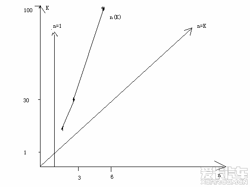
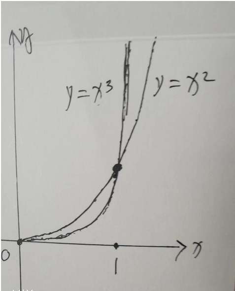

张祥前的数学理论
外星人有一个很重要的数学分支-----“趋势分析”。 我们地球上最重要的数学工具是微积分，他们主要用“趋势分析”。趋势分析部分内容和微积分是重叠的，涵盖了微积分所有的内容，但也有不同的部分。 他们的“趋势分析”主要是用严格手段定性、定量的来分析事 物发展、演化的趋势，从而准确预测结果。 趋势分析的定义是： 为了预测一个事件发展的结果 1，用相同、相似的、我们熟知的事件来类比。 2，把这个事件中某些参数放大、缩小，来做出判断。 3，用局部推测整体。用某一个空间区域去推测另一个空间区域，用某一个时间段推测另一个时间段。 我们知道，0是不能够作为除数，但是，我们在实践中经常会遇到除数是0的情况。 如果我们讨论0是怎么得到的，是从什么途径变成了0，我们用趋近于0来代替0，就可以解决这个问题，这个就是趋势分析一个重要的应用。 比如相对论中光速运动飞船的内部时空，光子的时空等，经常遇到这一类问题。 我们用几个实例，来说明一下。 1，问题： 我们知道，轴承主要是由钢珠和轴承套组成。制造轴承的时候，同样材料的情况下，我们来考虑：轴承中钢珠大一点和小一点，哪种情况下，轴承套磨损快？ 这个问题乍一看，不好回答。 我们设想，把钢珠直径逐渐的缩小，钢珠直径逐渐缩小，就变得像刀尖一样，对轴承套磨损肯定厉害。所以，结论是： 钢珠小一点，对轴承套磨损大一些。 2，用趋势分析证明哥德巴赫猜想 哥德巴赫猜想猜想的命题是：大于或者等于4的偶数都可以表示两个素数之和。 对于一个偶数K , 我们把所有大于2 小于K的素数和K相减，所得的结果有N个，这其中的结果有的可能是素数。 实验发现在K不是很大的情况下，这些素数可以组成n个素数对。这样，不同的K就有不同的n，我们认识到随着K值的增大，n也随着增大。 K值取10，可以表示成3+7, 5+5，有2个素数对，也就是n的值为2。 K值取30，可以表示成7+23, 11+19, 13+17, 有3个，也就是n为3。 K取100，n为6。 可以看出，在K值不是很大的时候，n随着K值的增加而增加，没有减少的情况出现。但是，增加的速度没有K增加的速度快。 下面，我们借助几何图形来分析n和K的值在越来越大的时候的变化趋势。 在下图中，  n(K)那条线，n随着K的增大而增大，但没有K增大的速度快，不过，始终是在增大着，随着K值的增大，离n =1那一条线是越来越远，永远也不会靠近n=1这条线。这个就意味着K值比较大的时候，n永远也不会小于1的，K至少有一对素数和，这个就证明了哥德巴赫猜想是正确的。 K 和n关系类似与一条抛物线，有可能当K趋向于无穷大的时候K = n²，但是，如果这个是正确的，其证明难度可能比哥德巴赫猜想更大。 3，用趋势分析求空间曲线的直角拐点。 求二维平面上抛物线的在第一象限内的直角拐点方程，并求出拐点坐标。 在下图中，有y = x²，y = x ³，y= x⁴ ·····等一系列抛物线。当y=x的n次方，n越大，抛物线就越靠近点（0,1），我们猜测当n =∞时候，抛物线就和点（0,1）重合了，显然，点（0,1）就是抛物线y= x的无穷大次方的拐点，这个拐点坐标就是（0,1）。 我们用趋势分析来严格证明这个猜测。  在上图中，抛物线y= x的无穷大次方中x的值取1，y等于1，如果x取小于1，哪怕只是比1微微的小一点点，y = 0。 如果x取大于1，哪怕只是比1微微的大一点点，y = ∞。 这样，对于x的取小于1的每一个值，都是y=0 对于x的取大于1的每一个值，都是y=∞ 这样，可以断定抛物线y= x的无穷大次方直角拐点坐标就在(0,1)上。 用同样的方法，可以求出圆方程x²+y² =1中，当2换成∞ ，这个圆就变成了一个正方形，并且，圆的直角拐点方程为： x∞+y∞ =1 其4个拐点分别是（1, 1）、（﹣1, 1）、（1,﹣1）、(﹣1,﹣1)。 用以上方法可以求出椭圆、双曲线、正弦线、余弦线等等各种曲线的直角拐点方程。 曲线的直角拐点方程，是空间连续过渡到不连续的表现，很显然，在直角拐点处，空间是不连续的。 探讨空间曲线的直角拐点方程，如果和物理学结合起来，具有惊人的价值。 这里只是简单介绍一下“趋势分析”，离外星人真正的数学分支----“趋势分析”是十万八千里，但是，可以起到抛砖引玉的作用，希望更多的人关注趋势分析，希望趋势分析成为地球上一个重要的数学分支。 外星人的趋势分析加上他们的空间信息场论【基本思想是宇宙任意一处空间可以包含这个宇宙以前、现在、以后所有的信息】，可以对空间中隐藏的以前、以后的信息进行解读、破译。其作用可以对未来进行预言，破译空间中隐藏的以前、以后的信息。 比如，在我们地球上，可以从空间信息场中获得我们唐朝、宋朝的视频资料。 趋势分析这种数学分支如果被建立，可以在灾害天气控制、经济预测、预测新型病毒流行、股票预测、大数字等领域发挥作用。 费尔马大定理的简洁证明 费尔马大定理的命题为： 方程“a的n次方 + b的n次方 = c的n次方”在 a，b，c，n都是非零正整数的情况下，n的值只能是1和2 。 下面给出证明。 n取1的话，a，b，c可以为正整数无须证明。 现在我们把n取一个大于1的固定正整数，让a和b各自从1开始，到2，再到3，再到4，再到5·····这样以正整数逐步增大。 我们发现c的值按照费尔马方程【我们将费尔马方程定义为（定义1）：a的n次方 + b的n次方 = c的n次方，其中a，b，c，n都是非零正整数，n＞1】的对应法则，随着a,b的增大而增大，c的值（还不是正整数之前）全部都是一系列正整数的n分之1次方的无理数【结论1】。 并且，c值不能小于2【结论2，证明：因为a和b最小的值是1】 c 的值随着a,b的增大而增大，在K范围内，假如我们突然发现c 的值出现了一个是正整数【我们把这个数叫费尔马数，费尔马数定义为（定义2）：方程“a的n次方 + b的n次方 = c的n次方”中[ a，b，c，n都是非零正整数，n＞1]c的值】。 以上的K大于或者等于c的n次方。 这个时候c大于a和b，而小于a+b，c,a,b又都是正整数，所以，数轴c,a,b我们可以用一个三角形P来表示。 令θ为a，b之间的夹角，c是最大边，θ为最大角，这样θ大于60度。 按照勾股定理，如果θ等于90度，n的值是2【结论3】。 结论4：当n大于2时候，θ小于90度。理由如下： 当n越大的时候，a+b-c就越大，导致c比起a+b就越小，c所对应的角度θ就越小。 比如用5² = 3 ²+ 4 ²和（4.497····）³= 3³+4³相比较。 n等于2时候, a+b-c = 2, 当n等于3时候，a+b-c = 2.503····· 结论5：以上三角形的三个边a,b,c【c是最大边，a,b,c都是正整数】，c可以由a和b各自从1开始，到2，再到3，再到4，再到5·····按照三角形对应法则变化而得到。而且任何一个三角形都可以按照三角形对应法则变化形成。 结论6： 按照前面分析，在K范围内，费尔马数c（参考定义2）可以按照费尔马方程（参考定义1）的对应法则，让a,b各自从1开始逐渐增大而得到；也可以按照三角形的对应法则c² = a ²+ b ² - 2ab cosθ，让a,b各自从1开始逐渐增大而得到。 由结论6推理出结论7： 在K范围内，费尔马方程对应法则包含在三角形三个边对应法则中【注意：逆定理“三角形三个边对应法则包含在费尔马方程对应法则中”未必成立，不过，证明费尔马定理不需要这个逆定理成立】。也就是说，三角形三个边对应法则包含了很多种对应法则，其中有一种对应法则和费尔马方程对应法则吻合。 由结论7推理出结论8： 在K范围内，按照费尔马方程对应法则得到的每一组数a,b,c【就是a,b各取一个数，按照费尔马方程对应法则得到c】，都可以用三角形三个边对应法则c² = a ²+ b ² - 2ab cosθ得到。 由于θ大于60度、小于或者等于90度，所以，2cosθ的值大于或者等于0而小于1【结论9】。 当费尔马方程在n大于1且a,b的值都取1的情况下，如果不违背结论8、结论2、结论1，参考结论9，2ab cosθ的值必须要等于0，按照结论3，n的值取2才有可能成立，但不能断定一定就成立，好在我们从实践中发现n = 2费尔马方程可以成立。【结论10】 证毕。 我们让a,b逐渐增大，如果用三角形三个边对应法则得到一系列c，c 的值可能是正整数开2次方的无理数、分数数开2次方的无理数，开2次方无理数再开2次方的数，而用费尔马方程对应法则得到的一系列c，c的值只能是正整数开n次方的无理数。 二者只有在n=2时候，才可以吻合。这样似乎也可以证明费尔马定理，但是，这种证明明显是太粗糙了。 有两个推论： 1，n大于2的时候，费尔马方程没有有理数解。 2，我们用尺子和圆规在平面上画不出开n（n为大于2的一个正整数）次方的无理数。这个也是费尔马大定理的几何实质。 求证，任何两个不相等的素数相除，如果能够除尽的话，除数只能是2和5 证明： 两个不相等的素数A和B相除，如果能够除尽的话，可以表示成 A÷B = 整数÷10-----n个零。 上式右边的分母只能分解出2和5两个素数。 证毕。